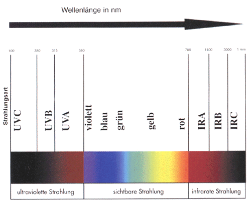

| 3.2.1 | Gefährdungsermittlung | |||
Im Rahmen der Gefährdungsermittlung hat der Unternehmer die Gefährdungen nach |
||||
|
−
|
Art, | |||
|
−
|
Umfang, | |||
|
−
|
Dauer und | |||
|
−
|
Wahrscheinlichkeit | |||
| der Gefährdungen der Augen und des Gesichts zu erfassen. Möglich sind zum Beispiel: |
||||
|
−
|
mechanische, | |||
|
−
|
optische, | |||
|
−
|
chemische, | |||
|
−
|
thermische, | |||
|
−
|
biologische, | |||
|
−
|
elektrische Gefährdungen. | |||
| In vielen Fällen ist mit dem Zusammentreffen mehrerer dieser Gefährdungen zu rechnen. | ||||
| So treten z.B. beim Schweißen neben optischen auch mechanische und thermische Einflüsse auf. Beim Austreten von Flüssigkeiten oder Gasen unter hohem Druck ist mit mechanischen, chemischen und thermischen Gefährdungen zugleich zu rechnen. | ||||
3.2.1.1 |
Mechanische Gefährdungen |
|||
| Mechanische Gefährdungen des Auges können sich durch Fremdkörper, wie Stäube und Festkörper, z.B. Späne, Splitter, Körner, ergeben, die das Auge treffen und verletzen. | ||||
| Stäube können zwischen Lid und Augapfel gelangen und zu Reizungen oder zu Entzündungen führen. Sind Gefährdungen durch Stäube nicht ausgeschlossen, ist ein Schutz des Auges auch von den Seiten her erforderlich. | ||||
| Treffen Festkörper auf das Auge, besteht in der Regel die Gefahr, dass sie durch Eindringen in die Hornhaut diese verletzen. Die Gefährdung des Auges ist nicht nur von der Form der Festkörper, sondern auch von der kinetischen Energie abhängig, mit der das Auge getroffen wird. Diese Energie hängt neben der Masse vor allem von der Geschwindigkeit des Festkörpers ab. | ||||
3.2.1.2 |
Optische Gefährdungen |
|||
| Optische Strahlung wird nach ihrer Wellenlänge in ultraviolette, sichtbare und infrarote Strahlung unterschieden.  |
||||
3.2.1.2.1 |
Ultraviolette Strahlung |
|||
| UV-Strahlung tritt z.B. beim Schweißen, bei intensiver Sonnenstrahlung, bei der Lacktrocknung, der Kunststoffhärtung oder bei medizinischen Anwendungen auf. Sie ist gefährlich für die Haut und die Augen. Bei der Einwirkung dieser Strahlung auf die Augen kann es langfristig zum Augenkatarakt (Star) oder kurzfristig zu Horn- oder Bindehautentzündungen ("Verblitzen") kommen. | ||||
3.2.1.2.2 |
Licht |
|||
| Licht ist sichtbare Strahlung, die ungehindert die Netzhaut des Auges trifft und das Sehen ermöglicht. Intensive sichtbare Strahlung kann – ähnlich wie bei der Laserstrahlung – die Netzhaut bleibend schädigen. Bei hohen Leuchtdichten oder Leuchtdichteunterschieden kann durch Blendung die visuelle Wahrnehmung behindert werden. | ||||
3.2.1.2.3 |
Infrarote Strahlung |
|||
| IR-Strahlung geht z.B. von feuerflüssigen Massen in der Metall- oder Glasindustrie aus; sie tritt aber auch bei Schweißvorgängen auf. Sie kann Schädigungen der Netzhaut und Linse verursachen. Langwellige IR-Strahlung kann zum grauen Star (Feuerstar) führen. | ||||
3.2.1.2.4 |
Laserstrahlung |
|||
| Beim Laser (Light amplification by stimulated emission of radiation) handelt es sich um Strahlungsverstärkung durch stimulierte Strahlungsemission im Wellenlängenbereich zwischen 100 nm und 1mm. Die hohe Intensität des Laserstrahles verbunden mit großer Reichweite kann das Auge bleibend schädigen. Im Wellenlängenbereich zwischen 400 nm und 1 400 nm können schon niedrige Leistungen die Netzhaut durch die Fokussierungswirkung der Augenlinse schädigen. | ||||
| Siehe auch Unfallverhütungsvorschrift "Laserstrahlung" (BGV B2). | ||||
3.2.1.3 |
Chemische Gefährdungen |
|||
| Chemische Gefährdungen können von festen, flüssigen oder gasförmigen Substanzen, z.B. Dämpfe, Nebel, Rauche, ausgehen. Chemikalien können sich im Augenwasser lösen. Säuren und Laugen können das Auge schwer schädigen. | ||||
3.2.1.4 |
Thermische Gefährdungen |
|||
| Hitze wird durch feste oder flüssige Körper (Berührungswärme), über Gase (Konvektionswärme) oder durch Infrarotstrahlung übertragen, wobei es durch Austrocknung zu Hornhautreizungen kommen kann. | ||||
| Kälteeinwirkung, z.B. bei längerem Aufenthalt in kalter Witterung oder in Kühlhäusern, kann zum Tränen der Augen und zu Erfrierungserscheinungen führen. | ||||
3.2.1.5 |
Biologische Gefährdungen |
|||
| Biologische Agenzien (Bakterien, Viren, Sporen) können über das Auge in den Körper gelangen und Infektionen verursachen. | ||||
3.2.1.6 |
Elektrische Gefährdungen |
|||
| Bei Schaltarbeiten oder Kurzschlüssen in elektrischen Energieverteilungsanlagen können Störlichtbögen entstehen. Durch die entstehenden hohen Temperaturen und wegspritzende Teilchen besteht die Gefahr, dass Auge und Gesicht erheblich geschädigt werden. | ||||